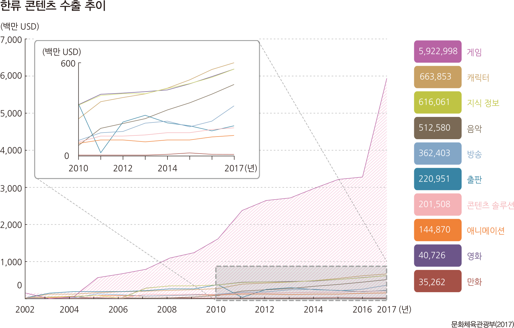
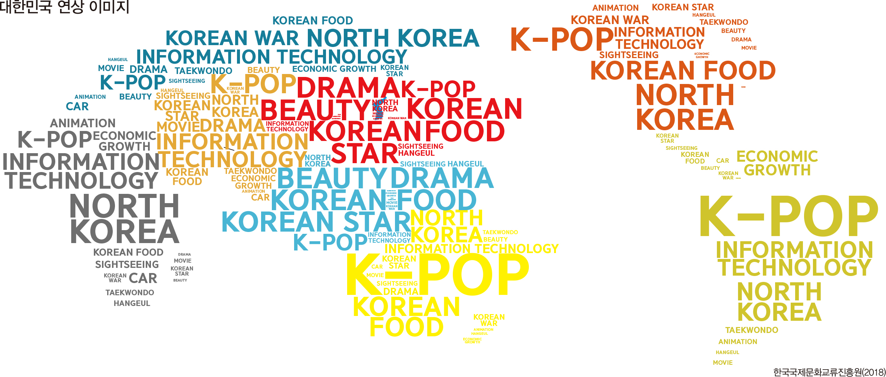

📌 시기 📌
한류 3.0: 2010년대 초반 이후
한류콘텐츠가 한류 3.0시대를 맞이하면서 다양성이 높아졌다. 더불어 한류 수출도 크게 증가하였으며, 게임, 지식, 음악, 방송, 만화 등 다양한 분야에서 콘텐츠가 나오면서 k-culture의 발전을 이루고 있다.
🎈 장르 🎈
전통문화, 문화 예술, 대중문화
대한민국 연상 이미지
세계의 우리나라 연상 이미지 조사를 보면, 전 세계 사람들이 대한민국을 생각하면 다양한 문화콘텐츠를 떠올리는 것을 볼 수 있다. 인터넷 매체가 발전하면서 우리나라 대중문화를 직.간접적으로 즐길 수 있게 되었고, 덕분에 다양한 분야의 한류 문화가 대중적 인기가 높아졌다.
🌎 대상 국가와 소비자 🌎
전 세계, 세계 시민
K-Culture은 전통문화, 문화예술, 문화 콘텐츠를 모두 포괄하는 것으로 기존의 한류가 문화 콘텐츠를 중심으로 일부 문화예술 분야를 포함한 의미라면,
세 가지 구성 요소가 유기적으로 연결된 것을 의미한다.
이미 아시아를 넘어 전 세계를 대상으로 하고 있으며 함께 하고 있다.
한식을 즐기고 한글을 배우고 드라마, 영화, KPOP을 즐기는 사람들이 많아지고 세상이 한류로 들썩이고 있다.